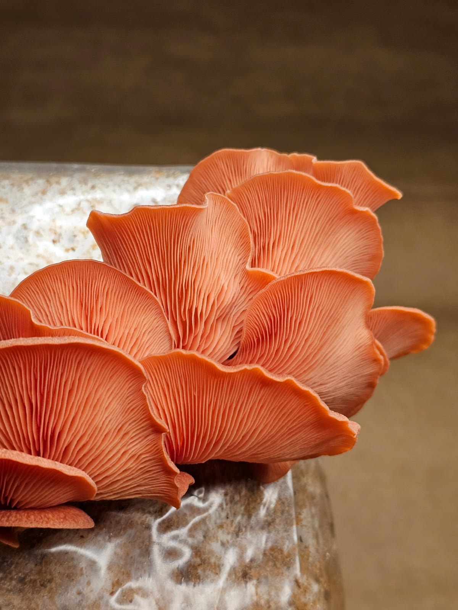
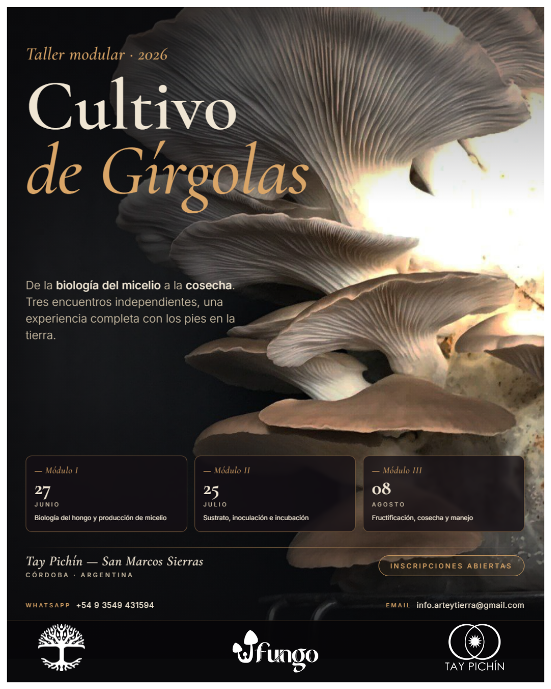
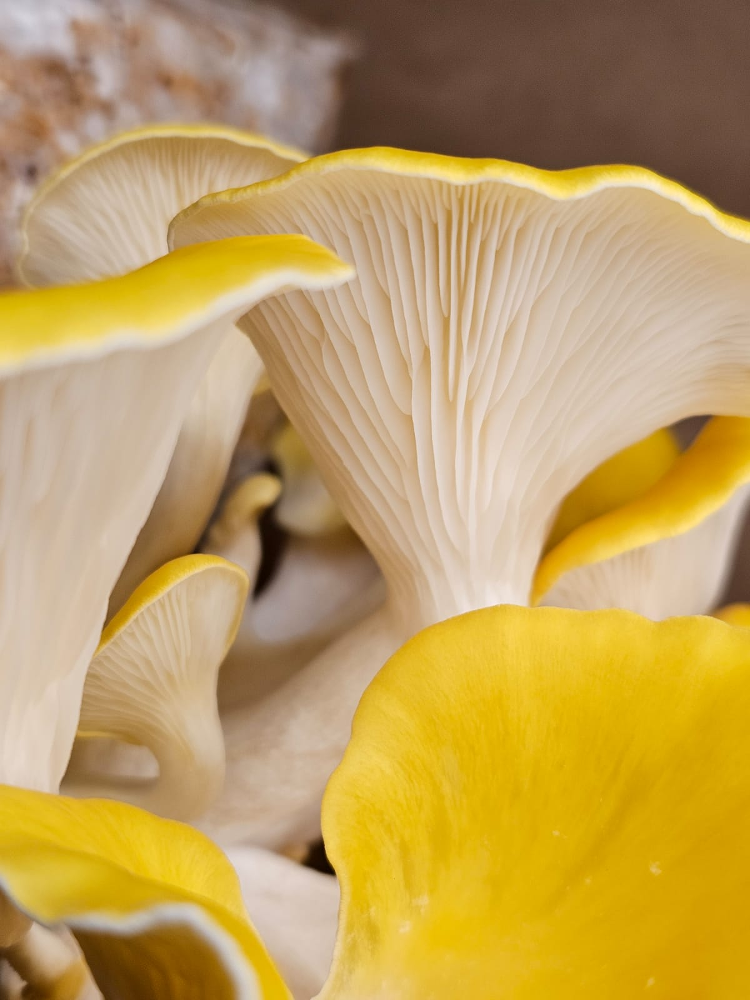
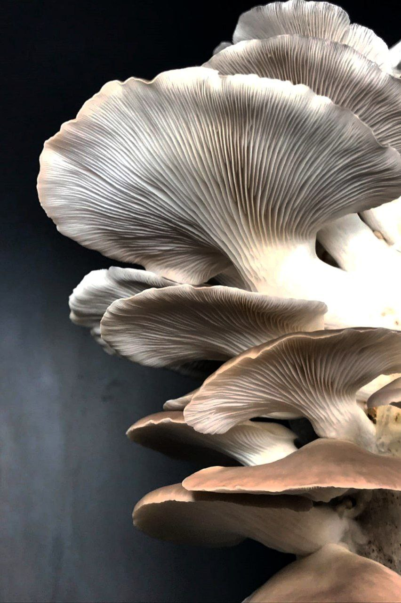

Tres encuentros para recorrer todo el proceso: desde entender cómo vive y crece un hongo hasta llegar a la cosecha. Sumate al ciclo completo o elegí el módulo que más te resuene.
Un taller intensivo, práctico y con los pies en la tierra para quienes se acercan por primera vez al mundo de los hongos —o para quienes quieren ir un paso más allá en su producción.
Tres encuentros que recorren todo el proceso: desde entender cómo vive y crece un hongo hasta llegar a la cosecha. El formato modular permite sumarse al ciclo completo o elegir el encuentro que más resuene con cada interés: laboratorio, autoproducción doméstica o emprendimiento.
Cada encuentro es una unidad cerrada — podés tomar uno, dos o el ciclo completo.
Para curiosos, principiantes y quienes quieren meterse en el lado más de laboratorio del cultivo.
Entendés cómo nace un cultivo y podés empezar a producir tu propia semilla.
Pensado para quienes quieren producir en casa sin montar un laboratorio.
Te vas con un cultivo en proceso — con respaldo de FUNGO si hay contaminación.
Para llevar el cultivo a su etapa final: la cosecha y el manejo del ambiente productivo.
Sabés sostener un ciclo productivo completo y resolver lo que aparece en el camino.
Quienes se enganchan con la parte técnica del cultivo y quieren producir su propio inóculo.
Quienes quieren producir hongos para autoconsumo sin montar un laboratorio.
Quienes piensan hacer del cultivo de hongos un proyecto productivo.
No incluye hospedaje — podés alojarte en la Ecoescuela Tay Pichín.Lodging not included — you can stay at the Tay Pichín Ecoschool.



Podés tomar un módulo suelto o sumarte al ciclo completo con descuento.Take a single module or join the full cycle at a discount.
Ideal para probar un módulo o elegir el que más te interese.Great to try one module or pick the one that interests you most.
El proceso completo: biología, sustrato y cosecha — con descuento.The full journey: biology, substrate and harvest — at a discount.
Reserva: 50% adelantado al confirmar tu cupo. No incluye hospedaje.Booking: 50% deposit to confirm your spot. Lodging not included.
Completá el formulario indicando si querés un módulo, dos o el ciclo completo. Te respondemos con instrucciones de pago en 24–48 hs.
— O pagá directamente —
En el pago de Mercado Pago aclará "Gírgolas · módulo I / II / III / completo" y enviá comprobante por WhatsApp.
El curso no incluye hospedaje, pero te invitamos a quedarte en la Ecoescuela el fin de semana del módulo. Camping, habitaciones compartidas y cabañas de bioconstrucción — reservá directo desde la página de Tay Pichín. The course does not include lodging, but we invite you to stay at the Ecoschool during the module weekend. Camping, shared rooms and bio-built cabins — book directly from the Tay Pichín page.
Ver hospedaje y reservar →See lodging & book →